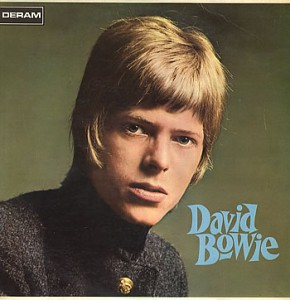
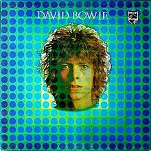
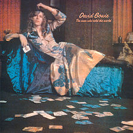
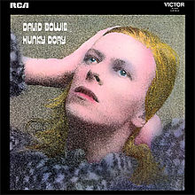
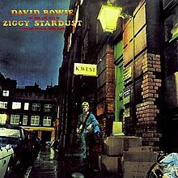
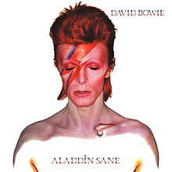
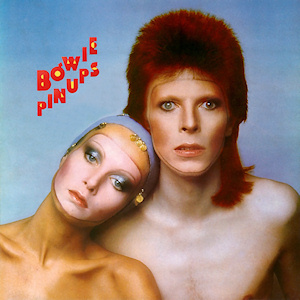
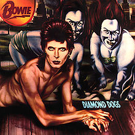

Bowie Remembered (Part One): David Jones Becomes David Bowie
David Bowie was a man of many guises. Throughout his fifty-year run, Bowie kept us guessing, constantly morphing into different incarnations without ever compromising his core creative values.
In this five part series, the entire No Ripcord staff celebrates an inimitable artist whose merits will continue to thrive for years to come. We'll go through his entire discography, starting with his earnest self-titled effort all the way to his enigmatic last utterance.
...
David Bowie (1967)
Bowie’s first studio album is perhaps the most overlooked, dismissed as a failure and a practice run for a then barely out of his teens rock’n’roll hopeful. He’d simply had a rocky start to a sprawling, epic career that didn’t begin until two years later with the “real” self-titled album -- that is, what would come to be called Space Oddity. In essence, this first effort would go down in history as a mulligan, happily forgotten and forgiven. But the fact is that it’s a very interesting album indeed, and we’ve been taking it out of context all of this time.
On the day of his passing, NPR replayed an excellent 2002 interview with Fresh Air’s Terry Gross, where Bowie revealed that his ambitions had never been to emulate the big acts of the moment (although it might be said that Sgt. Pepper, released on the same day as David Bowie, and arguably the very first concept album, may have had great influence on later personae that Bowie adopted). All he wanted was to make show tunes. “I thought that I could do some kind of vehicle involving rock musicals and presenting rock and characters and storyline in a completely different fashion.” Prophetic? Absolutely. And on closer listen, these seemingly simple songs reveal a wickedly macabre sense of humor, the first hints of messianic ambitions, and a voice that could never belong to a twenty year old boy. It’s a lost gem, and as we look back on Bowie’s life and work, skipping over the birth of his many personae would do him a complete disservice. If nothing else, listen to the closing track, “Please Mr. Gravedigger.” Even Tom Waits couldn’t achieve that kind of combination of humor and horror. - Gabbie Nirenburg
David Bowie (Space Oddity) (1969)
Featuring the instantly recognizable “Space Oddity”, Bowie’s second album was surely leaps and bounds more adventurous than his first foray into the world. Showing interest in mankind’s idea of flight, and maybe a viewing or two of 2001: A Space Odyssey, Bowie introduced the character of Major Tom for the world to eternally cherish and lampoon with charm and lighthearted absurdity.
“Oddity” sadly overthrows an album that is brimming with potential, one that careens into many directions: either he praised Dylan’s lonesome blues (“Unwashed and Somewhat Sightly Dazed”), strummed to the rhythm of his whimsical solace (“Letter to Hermione”), or began to experiment with pastoral orchestration in “Wild Eyed Boy from Freeload”, sung in so many vocal inflections that’s it’s hard to keep track. But the fully realized “Cygnet Committee” is a winner, a winding 9 1/2 minutes of patient acoustic prog that features one of his more memorable verses (try not to sing-a-long when he changes his pitch with a patient plea: “I love you badly”).
It was Bowie’s first arrival into Earth, an unfamiliar being that’s learning to mimic his rock n’ roll heroes; young, hungry, and ready to take over the world. - Juan Edgardo Rodríguez
The Man Who Sold the World (1970)
David Bowie’s second LP, Space Oddity, awarded him his first hit single with its astro-tragic and folk-centric title track. It was, though, Bowie’s third LP, The Man Who Sold the World, that offered an introductory glimpse of an early form of what would comprise The Spiders from Mars, that enigmatic band that would play back-up to Bowie’s androgynous starman, Ziggy Stardust. Crucial to this creative partnership was Mick Ronson, the guitarist and musical arranger whose role was essential in the development of Bowie’s glittery sound as well as his onstage persona.
While relatively hit-free, The Man Who Sold the World’s stylistic grit and outward flamboyance maintains its title as his first categorically “glam” album, a transition influenced by T. Rex’s Marc Bolan. Though Bowie’s actual involvement with the production of the music on the album has been called to question, (Ronson and producer Tony Visconti acknowledged as prime contributors), he is credited as sole songwriter.
Somewhat unique in its make-up next to other Bowie releases, The Man Who Sold the World revels in the harder edge its granted thanks to electric instrumentation. While Bowie’s penchant for folk music shines beneath a harder veneer at points ("All The Madmen", "Running Gun Blues", "The Man Who Sold the World"), he also pursues a rhythmic prowess akin to Black Sabbath (S"he Shook Me Cold') and the progressive virtuosity of King Crimson ("Saviour Machine").
The album’s title track gained notoriety in 1993 when Nirvana, recording a live session for MTV’s Unplugged, performed the song for its audience. - Sean Caldwell
Hunky Dory (1971)
Hunky Dory may not have been a soaring commercial success on its release, but it has since gone on to become one of Bowie's best-known - and best-loved - releases. Although a perennial feature in "Best Album" lists, to me it feels more like a collection of diverse yet brilliant songs than a thematically linked long-player. This isn't a criticism; it's my favourite Bowie record precisely because it's crammed with so many strong examples of his songwriting genius. Indeed, the first side plays like a Greatest Hits set with the likes of Life on Mars, Quicksand, Oh! You Pretty Things, and Changes, which thanks to its appearance on Microsoft Encarta 95, was the second Bowie tune I remember hearing (the first was about ten years earlier and a rare misstep, his collaboration with Mick Jagger on 1985's Dancing in the Street).
Elsewhere, Kooks is a lighter moment, but still one of the finest songs ever written about parenthood; Queen Bitch is a nice and sleazy nod to the Velvet Underground, and quite possibly the only song to feature the phrase "bipperty-bopperty hat"; and Andy Warhol is frankly hilarious ("Andy take a little snooze").
Hunky Dory sparked one of the finest recording streaks in popular music history but typically offered no clues as to where Bowie would head next. As it happened, those who were paying attention wouldn't have long to wait. And those who weren't? They would be soon. - David Coleman
The Glam Years
Introduction by Gabbie Nirenburg
I won’t pretend that these three seminal glam rock albums are the only true concept albums that Bowie ever made; so many have written so much on the subject, and I’m not here to reinvent the wheel. These three albums, however, built the foundation of glam rock, and are perhaps the most salient of David Bowie’s contribution to rock’n’roll. Many can argue with me, but I’ll stick to my guns on that one -- nothing could develop afterwards if Bowie hadn’t laid the foundation with Ziggy, Aladdin, and Halloween Jack. It might be shocking for many to learn that Bowie himself didn’t live to perform, but the personae were the perfect vehicle, and the short-lived but glorious era of glam in the 1970’s -- a genre so unique from the ubiquitous disco and its counter-culture hard rock foil.
The Rise and Fall of Ziggy Stardust and the Spiders from Mars (1972)
Ziggy Stardust emerged as a prophet for the weirdos, the losers, the kids who didn’t fit in, who questioned their sexuality, who didn’t know where to align. Ziggy, an alien, bisexual rockstar, falls to Earth and tells them the news that the apocalypse is coming in five years (actually, Mott the Hoople’s "All the Young Dudes", who carry the news as we well know, were meant to carry this news; the song was envisioned to be part of the Ziggy concept). Their parents, totally out of touch with reality, haven’t the slightest concept of what’s going on -- it’s the kids who reign. The story becomes ever more complicated, and it’s only hinted at somewhat vaguely in the songs themselves, but the result is clear: Ziggy becomes a martyr to his cause as he is taken apart by his own hubris on “Rock’n’Roll Suicide.” His Rise and his Fall. - Gabbie Nirenburg
Aladdin Sane (1973)
Aladdin Sane -- a play on A Lad Insane -- gave us the iconic lightning bolt, split down the middle face that many associate with Bowie even if they aren’t familiar with his work. While Aladdin isn’t explicitly a resurrection of Ziggy, and is less of a cohesive work, Bowie himself described the new character as “Ziggy goes to America.” The insanity and duality that his own impressions of America brought up in him provided the inspiration for the ups and downs of this work. Contrast “Time” or “The Prettiest Star” with the absolutely frenetic “Jean Genie” or “Let’s Spend the Night Together.” I caught myself describing the album as schizophrenic, but realized this was no accident; Bowie’s brother had just been diagnosed with the crippling disorder, and it inspired the lad insane. - Gabbie Nirenburg
Aladdin Sane was released at the peak of Bowie's glam period. Behind the scenes, life was less than hunky-dory. Bowie's marriage was falling apart and Main Man management was deeply in the red, all the stress compounded by the demands of publicity and touring. The title song reveals his current state of mind, yet at the same time it veers to uncharted musical lands. Some credit for this goes to pianist Mike Garson, the new addition to the line-up, who adds cabaret drama to songs like "Time" and "Lady Grinning Soul". The Stones share the pool of influence, evident in "Watch That Man", "Panic In Detroit", and the cracking version of "Let's Spend The Night Together". Bowie is the lightning-bolt catalyst that brings cohesion to the odd mix of camp and Stones, pointing the way to a future beyond glam. - Angel Aguilar
Pin Ups (1973)
Pin Ups is a birthday gift I still cherish, one album I play often though the grooves have worn down. Bowie covers some of his favourite songs from the 1964-1967 club-circuit period, but this isn't a stopgap album--love and care are behind every track. Songs like "I Can't Explain", "Sorrow", and "See Emily Play" get bold arrangements, and the album has a richer sound mix than the rush-released Aladdin Sane. Mick Ronson and Trevor Bolder from the Spiders are still on board, their musicianship shining on tracks like "Rosalyn" and "Shapes Of Things". Time, however, didn't stop for them. While looking back, Bowie was secretly contemplating his future without the band. On July 3, 1973, at the Hammersmith Odeon, he announced the Spiders' break up to a stunned audience. It was a curtain call for Ziggy, but for Bowie it was a new start. - Angel Aguilar
Diamond Dogs (1974)
Diamond Dogs, again featuring a different title character, rounds out the apocalyptic glam rock concept era. The album structure mimics Ziggy Stardust in many ways, introing with another prophecy on “Future Legend” and of course the seamless fade into the title track. The sweeping, emotional “Sweet Thing/Candidate/Sweet Thing (reprise)” following “Diamond Dogs” at the beginning of the album is such an unusual placement, especially when followed by “Rebel Rebel,” one of his most memorable tracks. But on the whole, this is ultimately Bowie’s most political, distressing album to date, paying utterly overt homage to Orwell on “1984” and “Big Brother.” The album has been heralded as glam rock’s swan song, and with good reason. This was the end, my friend -- not with a whimper but with a bang.
Bowie invented an entire genre of music, but ducked out of it the very moment that he felt it wane, and not a second too late. As brief as it was, glam rock had a lasting and incredible impact, not only on the music scene, but on the cultural, sexual, and political development of a generation. Diamond Dogs paved the way for (or at least predicted) the upcoming punk revolution, whether or not Bowie participated himself. The full impact of these three records, though they weren’t the only ones he produced between 1972 and 1974, defined a short but powerful epoch. Many find these alter egos completely synonymous with Bowie, and this era the most inextricable from his own true musical persona. - Gabbie Nirenburg
Diamond Dogs wasn't well received. As a concept album it was sketchy, its songs unfocused, the sound mix swampy. Few knew at the time that Bowie was struggling with cocaine addiction, not the best time to take on the musical reins alone plus a gargantuan stage show. However, there's good stuff here that can't be ignored. "Rebel Rebel", for instance, was the last great glam hit, while "1984" was a preamble to the funky Philadelphia Sound of Young Americans. "Sweet Thing", "Candidate", and "We Are The Dead" point ahead to the rich atmospherics of Station To Station and Low. All in all, this is a transitional album that has more peaks than valleys. Bowie would eventually regain his bearings, but the groundwork for the next stage was laid here. - Angel Aguilar
...
In part two of our look into David Bowie's career, we explore his "golden years", starting with his "soul" phase all the way to his highly-influential Berlin years.
1 February, 2016 - 04:37 — No Ripcord Staff